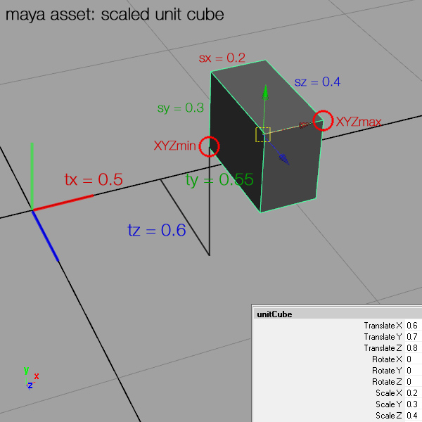

assetInfo function
float assetInfo(filePath, attribute)
filePath string Path to asset. See Asset Search for information about search locations.
attribute selector
| sx, sy, sz, tx, ty, tz | Specifies asset dimension or translation. |
Returns the asset size or translation.
This function returns the sizes or translations of the asset defined in filePath, depending on the specified attribute selector.
Related
Examples
The translation values are calculated by CityEngine based on the corner of the asset's bounding box, using the corner with the lowest possible x, y, and z coordinates (XYZmin).
Any specific 3D transformations in the source asset, such as Maya translations, are not the same as the translations CityEngine computes here.

print(assetInfo("assets/unitCube.obj", sx))
print(assetInfo("assets/unitCube.obj", sy))
print(assetInfo("assets/unitCube.obj", sz))
print(assetInfo("assets/unitCube.obj", tx))
print(assetInfo("assets/unitCube.obj", ty))
print(assetInfo("assets/unitCube.obj", tz))
# results = # 0.2 # 0.3 # 0.4 # 0.5 # 0.55 # 0.6